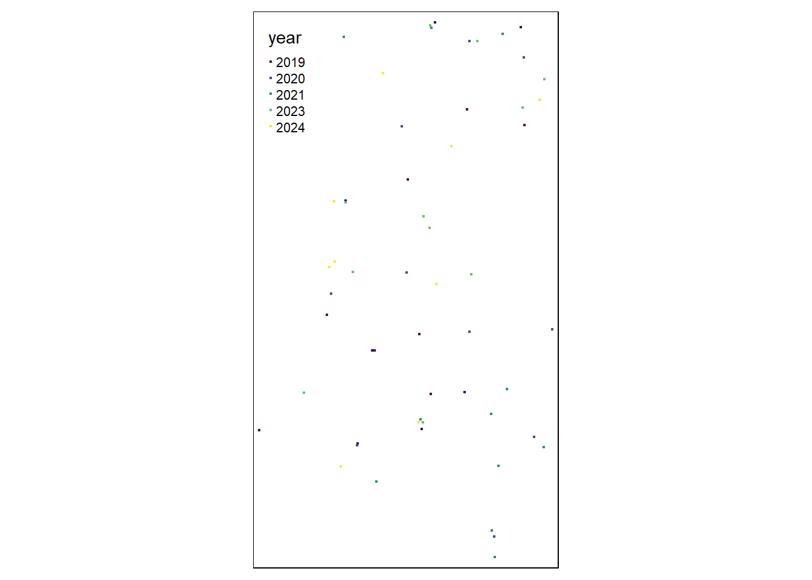
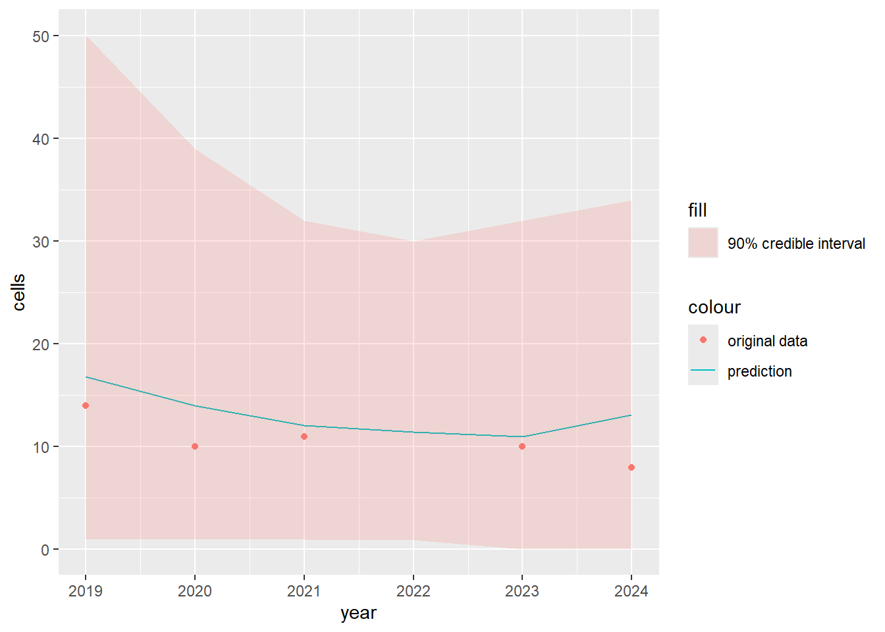

Skip to main content
ngeringa bird surveys
Show table of contents
Table of contents
1
Aim
2
Methods
3
Australian Magpie
4
Australian Magpie-lark
5
Australian White Ibis
6
Black-faced Cuckoo-shrike
7
Brown-headed Honeyeater
8
Common Blackbird
9
Brown Songlark
10
Common Bronzewing
11
Crested Pigeon
12
Crimson Rosella
13
Elegant Parrot
14
Galah
15
Grey Fantail
16
European Goldfinch
17
Grey Shrike-thrush
18
Horsfield’s Bronze-cuckoo
19
House Sparrow
20
Laughing Kookaburra
21
Long-billed Corella
22
Little Corella
23
Little Raven
24
Mistletoebird
25
Musk Lorikeet
26
New Holland Honeyeater
27
Noisy Miner
28
Purple-crowned Lorikeet
29
Red-browed Finch
30
Rainbow Lorikeet
31
Red-rumped Parrot
32
Rufous Whistler
33
Red Wattlebird
34
Southern Boobook
35
Sulphur-crested Cockatoo
36
Superb Fairy-wren
37
Silvereye
38
Stubble Quail
39
Common Starling
40
Striated Pardalote
41
Striated Thornbill
42
Tree Martin
43
White-naped Honeyeater
44
White-plumed Honeyeater
45
Welcome Swallow
46
Willie Wagtail
47
Yellow-faced Honeyeater
48
Yellow-rumped Thornbill
49
Yellow Thornbill
View book source
3
Australian Magpie
3.1
Map

3.2
Plot

2
Methods
4
Australian Magpie-lark
On this page
3
Australian Magpie
3.1
Map
3.2
Plot
View source
Edit this page